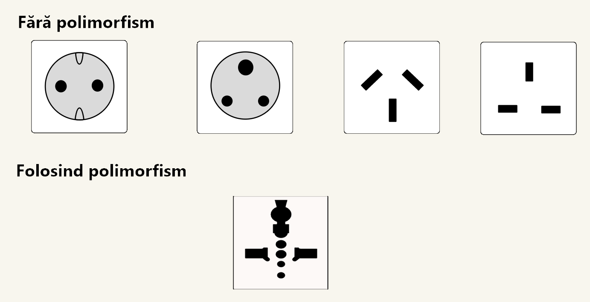

Polimorfism în Java
Polimorfismul în Java este capacitatea unui obiect de a lua mai multe forme.
Mai simplu spus, polimorfismul în java ne permite să efectuăm aceeași acțiune în multe moduri diferite. Orice obiect Java care poate trece mai mult de un test ESTE-UN este considerat polimorf și în java, toate obiectele java sunt polimorfe, deoarece a trecut testul ESTE-UN pentru tipul propriu și pentru clasa Object. Există două tipuri de polimorfism în java: polimorfism în timp de compilare și polimorfism în timpul rulării.
Derivarea cuvântului polimorfism este din două cuvinte grecești diferite - poli și morfuri. "Poli" înseamnă numeroase, iar "Morfism" înseamnă forme. Deci polimorfismul înseamnă nenumărate forme. Polimorfismul este una dintre cele mai semnificative caracteristici ale programării orientate pe obiecte.

De exemplu superclasa "Poligon" are o metodă numită aflaSuprafata():
- aflaSuprafata() în subclasa "Triunghi" va fi implementată folosind formula a=x*y/2
- aflaSuprafata() în subclasa "Dreptunghi" va fi implementată folosind formula a=x*y
Tipui de polimorfism
Polimorfismul poate fi realizat prin două metode diferite:
- Supraîncărcarea metodei
- Suprascrierea metodei
- Metoda suprascriere este utilizată pentru a furniza implementarea specifică a unei metode care este deja furnizată de superclasa sa.
- Metoda suprascriere este utilizată pentru polimorfismul în timpul rulării
- Metoda trebuie să aibă același nume ca în clasa părinte
- Metoda trebuie să aibă aceiași parametri ca în clasa părinte.
- Trebuie să existe o relație ESTE-UN (moștenire).
Dacă o clasă are mai multe metode având același nume, dar diferiți ca parametri, este cunoscută sub
numele de Metoda supraîncărcare.
Dacă trebuie să efectuăm o singură operație, același nume al metodelor crește lizibilitatea
programului.
Să presupunem că trebuie să efectuați adunarea numerelor date, dar poate exista orice număr de
argumente, dacă scrieți metoda cum ar fi a (int, int) pentru doi parametri și b (int, int, int) pentru
trei parametri, atunci poate fi dificil pentru dvs., precum și pentru alți programatori, să înțelegeți
comportamentul metodei, deoarece numele acesteia diferă.
Deci, efectuăm supraîncărcarea metodelor pentru a rezolva problema.
Avantaj: Supraîncărcarea metodei mărește lizibilitatea programului
Exemplul 1(prin schimbarea numărului de argumente): În acest exemplu, am creat două metode, prima metodă adunare() realizează adunarea a două numere și a doua metodă adunare() efectuează adunarea a trei numere. În acest exemplu, creăm metode statice, astfel încât să nu avem nevoie să creăm instanță pentru apelarea metodelor.
TestSuma.java
public class Suma{
static int aduna(int a,
int b){ return a + b; }
static int aduna(int a,
int b, int c){
return
a + b + c; }
}
public class TestSuma{
public static void main(String args[]){
System.out.println(Suma.aduna(11,
11));
System.out.println(Suma.aduna(11,
11, 11));
}
}
Afișare:
22
33
Exemplul 2(prin schimbarea tipului de date): În acest exemplu, am creat două metode care diferă în funcție de tipul de date. Prima metodă add primește două argumente întregi și a doua metodă adunare() primește două argumente duble.
TestSuma.java
public class Suma{
static int aduna(int a,
int b){ return a + b; }
static double aduna(double
a,
double b){ return
a + b; }
}
public class TestSuma{
public static void main(String args[]){
System.out.println(Suma.aduna(11,
11));
System.out.println(Suma.aduna(12.3,
12.6));
}
}
Afișare:
22
24.9
Dacă subclasa (clasa copil) are aceeași metodă ca cea declarată în clasa părinte, este cunoscută sub
numele de metodă de suprascriere în Java.
Dacă trebuie să efectuăm o singură operație, același nume al metodelor crește lizibilitatea
programului.
Cu alte cuvinte, dacă o subclasă oferă implementarea specifică a metodei care a fost declarată de una
dintre clasele sale părinte, aceasta este cunoscută sub numele de metoda suprascriere.
Cand se folosește:
Reguli pentru suprascriere:
Exemplul: În acest exemplu, am definit metoda de rulare în subclasă așa cum este definită în clasa părinte, dar are o anumită implementare. Numele și parametrul metodei sunt aceleași și există o relație ESTE-UN între clase, deci există metoda de suprascriere.
Masina.java
//cream clasa parinte
public class Vehicul{
void porneste(){ System.out.println("Vehiculul a pornit"); }
}
//cream clasa copil
public class Masina extends Vehicul{
//definim aceeasi metoda ca si in clasa parinte
void porneste(){ System.out.println("Masina a pornit"); }
public static void main(String args[]){
Masina obj = new Masina(); //cream obiectul
obj.porneste(); //apelam metoda
}
Afișare:
Masina a pornit